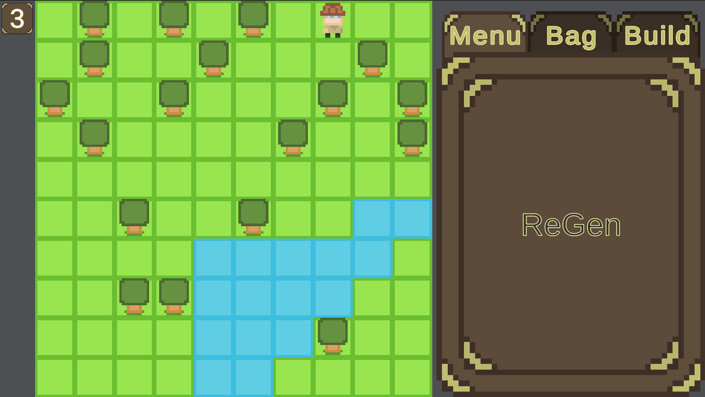
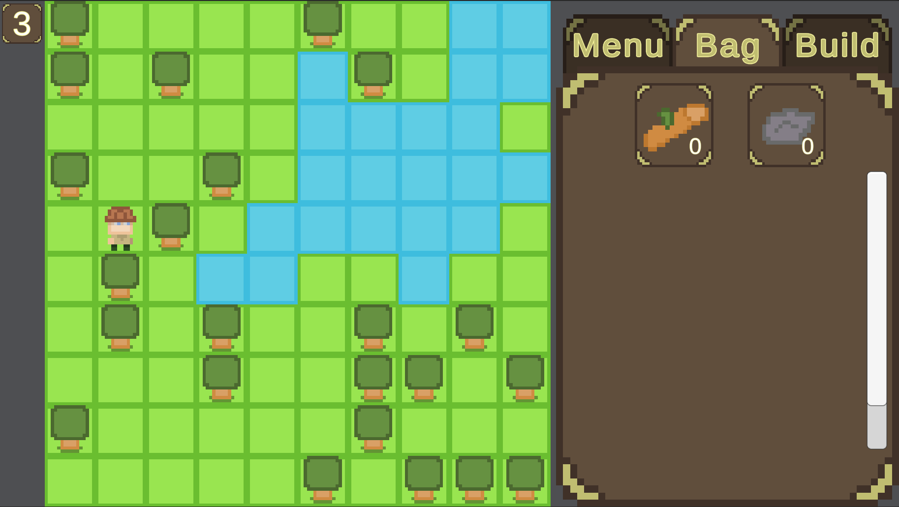

Fishing Arcade Game



About
This is the project I am currently working on. I started it in Unity but I am current porting all progress into Unreal as an excuse to learn Unreal Engine.
The game is a fishing game. You fish to collect rare fish to level up and get better gear to get more fish. You also can regenerate the world and cut trees down to get wood for docks to reach deeper water.
This was a project that started with my interest in world generation and random world generation. I've learned about the many ways to accomplish this and which is best for my own needs.